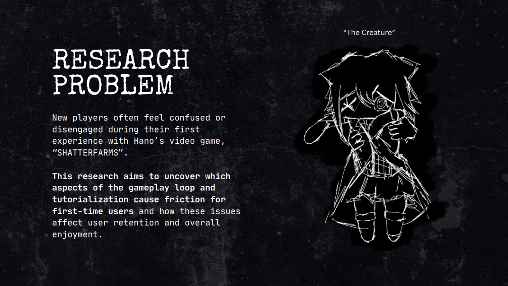

UX Research
Marks Game – UX Research
This project focused on researching the game experience, identifying the problems users face, and exploring how the game could be improved through better user understanding and design thinking.

Overview
The goal of this project was to investigate how users experience the game, what issues they encounter, and where improvements could be made.
My Role
I focused on researching user pain points, analyzing the problems users faced, and identifying opportunities to improve the overall experience.
Problem
Even when a game has a strong concept, users may still struggle with usability, confusion, or frustration if the experience is not designed clearly.
Process
- Researched the game and the experience surrounding it
- Identified recurring user frustrations and pain points
- Looked for patterns in how the game could be improved
- Applied UX thinking to suggest clearer improvements
Solution
Rather than jumping straight into visuals, this project emphasized understanding the user first. My focus was on identifying informed improvements based on research.
Outcome
This project helped me strengthen my UX research skills and better understand how user feedback can guide improvements in interactive experiences.